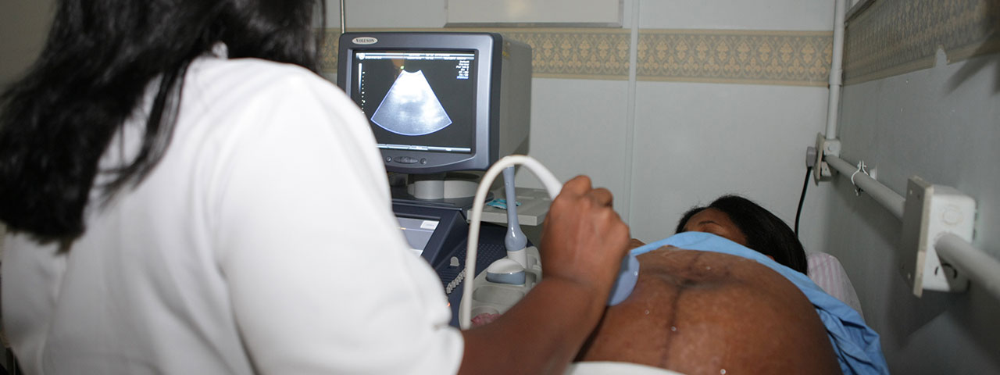
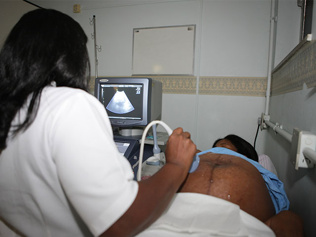

Módulo 5 | Aula 4 Estratégias de melhoria para acesso aos serviços pelos(as) usuários(as)
Tópico 1
Estigma e discriminação nos serviços de saúde
Nos últimos anos são crescentes no Sistema Único de Saúde (SUS) os relatos de usuários(as) que passam por situações de estigma e discriminação nos serviços de saúde.
O aumento da evidência dessas situações deve-se a um conjunto de fenômenos ao longo da história. Um deles diz respeito às mudanças no SUS, um sistema complexo e operante em todo o país, que passou a implementar uma rede de serviços de saúde diversos e descentralizados, que ampliou o acesso de outros segmentos sociais, como a população LGBTQIA+ e a população que vive em situação de rua, que são socialmente marginalizadas.
O ingresso de novos públicos no sistema traz necessidade de criação de novos modos de acolhimento, atendendo marcas culturais específicas destes novos públicos.
Outro fator refere-se a uma maior conscientização social sobre as implicações do estigma e da discriminação de determinados grupos sociais, que guarda relação com a conquista da democracia e da Constituição Federal de 1988, a Constituição Cidadã, e os avanços legais.
Práticas culturais correntes foram percebidas como estigmatizantes, tais como expressões racistas, sexistas, misóginas, depreciadoras de pessoas que vivem na pobreza ou na exclusão por falta de escolarização adequada.
Saiba mais...
Como identificar o estigma e a discriminação nos serviços de saúde no SUS?
São situações que envolvem inúmeras e diferentes barreiras. Vamos conhecer algumas:
Por isso a conquista dos direitos humanos, da democracia, da Constituição de 1988 com seus marcos legais e do estabelecimento do SUS, baseado em princípios de universalidade, equidade, justiça e controle social, são fundamentais para o enfrentamento do estigma e da discriminação e, consequentemente, a melhoria do acesso aos serviços de saúde pelos(as) usuários(as).
Para assistir...
Assista a um dos programas da Rede TVT, onde o diretor do documentário “Carta Para Além dos Muros”, André Canto, mais Micaela Cyrino, artista visual e performer, e Lucas Raniel, publicitário e youtuber do canal "Falo Memo!“, comentam situações de estigma que atravessam a história da Aids no Brasil.
Fonte: Youtube
Para refletir...
Com base nos exemplos de estigma e discriminação nos serviços públicos de saúde, reflita sobre as ações que visam ampliar o acesso aos serviços de saúde.
Para ajudar nessa reflexão, é importante retornar algumas das razões para os problemas e propor alguns caminhos para solucioná-los, ou pelo menos, mitigá-los, já que se trata de tarefa complexa e sem soluções mágicas.
Vale relembrar a perspectiva teórica do “marco das vulnerabilidades”, que, como você já viu anteriormente, é um conjunto de conceitos que define as condições e situações individuais, socioculturais e estruturais de vulnerabilidade das pessoas a uma série de agravos de saúde. Tais condições e situações não são estanques, ao contrário, estão em inter e intra relação dinâmica, onde uma condição ou situação influencia a outra. O conceito de vulnerabilidade também pode auxiliar na compreensão dos obstáculos enfrentados para chegar e permanecer nos serviços e apontar algumas ações para vencê-los.